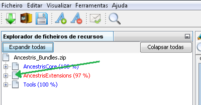
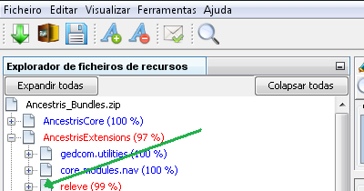
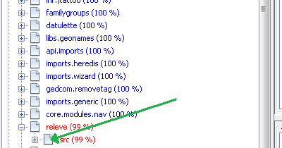
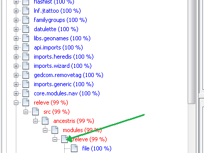
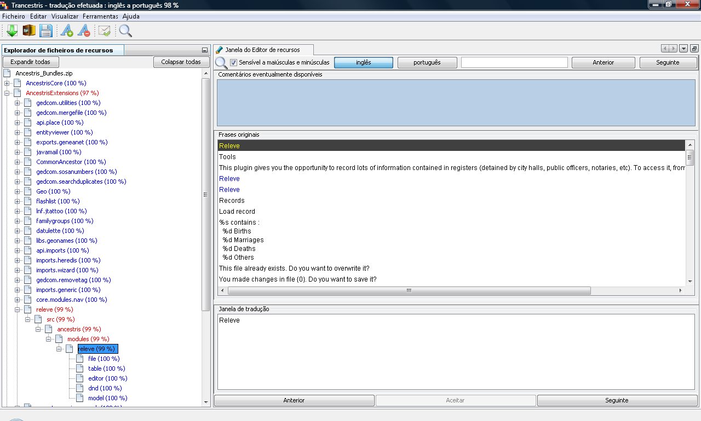

Se reparar na janela principal do Trancestris, verá à sua esquerda, o "Explorador
de ficheiros de recursos".
Aí, tem uma árvore de ficheiros, que está colapsada, no todo ou em
parte. Pode ver que há alguns nomes em azul, outros em vermelho. Quando um nome
está em azul, significa que todas as frases e palavras que pertencem a esse ramo
da árvore, já foram traduzidas. Quando vê o vermelho, aí sim,
significa que há traduções a fazer.

Na imagem acima, não temos nada a traduzir nos projetos “Tools” e
“AncestrisCore”, mas temos
que trabalhar o projeto “AncestrisExtensions”.
“Tools” e “AncestrisCore”
estão a azul mas TrancestrisExtensions
está a vermelho.
Temos de expandir o segundo projeto: “TrancestrisExtensions”.
Clique no símbolo à esquerda do nome, onde a seta verde
indica (pode ser um triângulo, um sinal +, varia com o sistema operativo).
Deverá ver o seguinte:

Podemos ver aqui que a subpasta "releve",
precisa de tradução, mas não as gedcom.utilities,
core.modules.nav, etc...
Volte a clicar no símbolo, à esquerda da palavra "releve".

Repita este processo até ver a imagem abaixo.

Aqui verá que "file"
está em azul, e foi traduzido (a cor azul, mas também os
100% como informação). "releve",
que é uma subpasta de “modules”, está a vermelho
e precisa de tradução (podemos ver que 99% já foi traduzido).
"releve" está a vermelho porque
alguma das suas subpastas necessita de tradução. As frases dentro
de “file”, foram totalmente traduzidas,
mostrando a informação 100% e a cor azul.
O que fazer a seguir? Clique na última linha a vermelho, "releve (99%)"
(veja a seta verde).
Deverá ver o ecrã que se segue:

Agora estamos prontos para começar a traduzir.
|
|
|